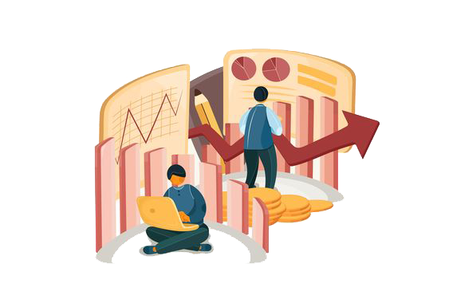
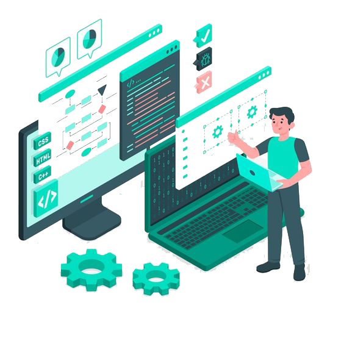
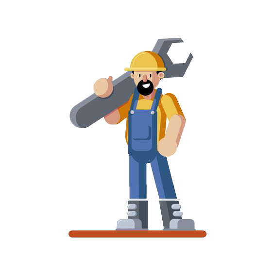
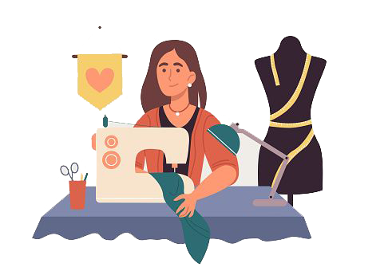
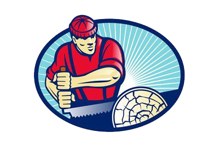

Адреса: вул.Чехова, 20, м.Коломия, Івано-Франківська обл., Україна, 78203
E-mail (електронна пошта): polynet100@gmail.com
тел.(03433) 5-03-39, факс (03433) 4-77-26
Відбіркова комісія: (03433) 2-79-85, (03433) 2-66-75
071 «Облік і оподаткування» / ОПП «Облік і оподаткування»

Форма здобуття освіти: денна, заочна
Кваліфікація: Фаховий молодший бакалавр з обліку та оподаткування
Термін навчання:
2 роки 10 місяців – на основі базової загальної середньої освіти,
1 рік 10 місяців – на основі повної загальної середньої освіти
Фахівці можуть обіймати такі посади:
технік з планування, бухгалтер, касир-експерт,
інспектор, інспектор з інвентаризації, інспектор-ревізор, ревізор.
072 «Фінанси, банківська справа та страхування» /
ОПП «Фінанси, банківська справа та страхування»

Форма здобуття освіти: денна, заочна
Кваліфікація: Фаховий молодший бакалавр з фінансів,
банківської справи та страхування
Термін навчання:
2 роки 10 місяців – на основі базової загальної середньої освіти,
1 рік 10 місяців – на основі повної загальної середньої освіти.
Фахівці можуть обіймати такі посади:
брокер (посередник) з цінних паперів, дилер (продавець) цінних паперів,
агент страховий, інспектор з організації, інкасації та перевезення цінностей,
інспектор кредитний, інспектор обмінного пункту, бухгалтер, касир-експерт,
інспектор-ревізор, інспектор з інвентаризації, інспектор з контролю за цінами.
073 «Менеджмент» / ОПП «Менеджмент»
Форма здобуття освіти: денна, заочна
Кваліфікація: Фаховий молодший бакалавр з менеджменту
Термін навчання:
3 роки 6 місяців – на основі базової загальної середньої освіти,
2 роки 6 місяців – на основі повної загальної середньої освіти
Фахівці можуть обіймати такі посади:
помічник керівника виробничого підрозділу,
помічник керівника малого підприємства без апарату управління,
інспектор з контролю за виконанням доручень, референт з основної
діяльності, організатор з персоналу, інспектор з кадрів, диспетчер,
диспетчер виробництва, технік з підготовки виробництва, технік з праці,
агент з постачання, диспетчер з відпуску готової продукції.
075 «Маркетинг» / ОПП «Маркетинг»
Форма здобуття освіти: денна, заочна
Кваліфікація: Фаховий молодший бакалавр з маркетингу
Термін навчання:
2 роки 10 місяців – на основі базової загальної середньої освіти,
1 рік 10 місяців – на основі повної загальної середньої освіти
Агенти з маркетингових послуг працюватимуть на підприємствах оптової
та роздрібної торгівлі, маркетингових службах підприємств різних видів
діяльності. Фахівці можуть обіймати такі посади: менеджер, консультант
з маркетингу, брокер, дилер, маклер біржовий, агент комерційний, агент
торговельний, мерчендайзер, представник торговельний, організатор з постачання,
організатор зі збуту, агент рекламний, торговець (обслуговування бізнесу та реклами).
Фахівці з маркетингу здатні реалізовувати дослідження внутрішнього і зовнішнього ринку
товарів і послуг, проводити сегментування товарних ринків, розробляти маркетингову товарну,
цінову та збутову політику,а також політику комунікацій..
121 «Інженерія програмного забезпечення» /
ОПП «Інженерія програмного забезпечення»

Форма здобуття освіти: денна, заочна
Кваліфікація: Технік-програміст
Термін навчання:
3 роки 10 місяців – на основі базової загальної середньої освіти,
2 роки 10 місяців – на основі повної загальної середньої освіти
Фахівці можуть обіймати такі посади:
технік-програміст, фахівець з інформаційних технологій,
фахівець з розробки та тестування програмного забезпечення,
фахівець з розроблення комп’ютерних програм.
133 «Галузеве машинобудування» /
ОПП «Галузеве машинобудування»

Форма здобуття освіти: денна, заочна
Кваліфікація: Технік з експлуатації та ремонту устаткування
Термін навчання:
3 роки 10 місяців – на основі базової загальної середньої освіти,
2 роки 10 місяців – на основі повної загальної середньої освіти
Фахівці можуть обіймати такі посади:
технік з експлуатації та ремонту устаткування, технік-конструктор (механік),
технік-технолог (механік), слюсар-ремонтник, технік з налагоджування
та випробування, технік з метрології.
151 «Автоматизація та комп’ютерно-інтегровані технології» /
ОПП «Автоматизація та комп’ютерно-інтегровані технології»
Форма здобуття освіти: денна, заочна
Кваліфікація: Електромеханік
Термін навчання:
3 роки 10 місяців – на основі базової загальної середньої освіти,
2 роки 10 місяців – на основі повної загальної середньої освіти
Фахівці можуть обіймати такі посади:
електромеханік, електромеханік дільниці,
технік-конструктор (технік-електромеханік) з автоматизації
виробничих процесів, технік з налагоджування та випробувань,
кресляр-конструктор систем автоматизації, лаборант з обслуговування
засобів автоматизації.
182 «Технології легкої промисловості»/
ОПП «Технології легкої промисловості»

Форма здобуття освіти: денна, заочна
Кваліфікація: Технік – конструктор
Термін навчання:
3 роки 10 місяців – на основі базової загальної середньої освіти,
2 роки 10 місяців – на основі повної загальної середньої освіти
Фахівці можуть обіймати такі посади:
технік-конструктор, конфекціонер, виготовлювач лекал (швацьке виробництво), закрійник.
205 «Лісове господарство»/
ОПП «Деревообробні та меблеві технології»

Форма здобуття освіти: денна, заочна
Кваліфікація: Технік – технолог
Термін навчання:
3 роки 10 місяців – на основі базової загальної середньої освіти,
2 роки 10 місяців – на основі повної загальної середньої освіти
Фахівці можуть працювати на підприємствах деревообробної
промисловості на посадах: технолог, майстер виробничої дільниці,
технік-лаборант, контролер деревообробного виробництва,
технік з підготовки виробництва.